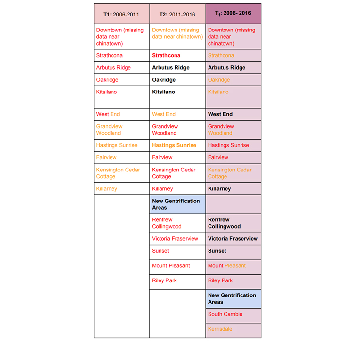

Gentrification in the City of Vancouver
Results
Time Period 1: 2006-2011

Time Period 2: 2011- 2016

OBJECTIVES
1. To see if this model is an accurate predictor of patterns in gentrification over the two periods.Quantitative Confirmation: We see a pattern from T1 to T2 where the majority of gentrifying areas turn into gentrified ones, and those which are already gentrified in T1 don’t see any unusual amounts of negative change in T2.
Qualitative confirmation: From previous studies and literature most neighbourhoods identified by our study have been identified as already gentrified or gentrifying.

2. To identify at-risk areas that the city should be looking into. From T2 and Tt we’ve identified the following areas as at-risk areas which are need of intervention:
- Downtown (missing data near chinatown)
- Strathcona
- Grandview Woodland
- Hastings Sunrise
- Fairview
- Kensington Cedar Cottage